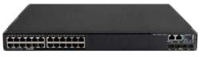
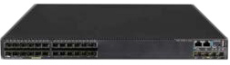
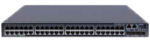
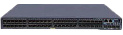

S5600-30C-EI-G：24个10/100/1000BASE-T端口，4个10G/1G BASE-X SFP+端口，1个端口扩展槽位，2个风扇模块槽位，2个电源模块槽位。
UNISS5600-EI-G系列高性能以太网交换机
- 产品概述
- 产品特点
- 产品规格
- 组网应用
- 相关资料
产品概述
UNIS S5600-EI-G系列交换机是北京紫光恒越网络科技有限公司最新推出的自主可控以太网交换机产品，主机均固化4端口万兆光口，可同时扩展万兆端口板卡，UNIS“-G”系列产品采用国产化芯片、CPU，实现了核心器件的国内自主开发研制，并支持多种认证方式和加密技术，安全可靠。UNIS S5600-EI-G系列支持可插拔双电源、可插拔双风扇结构设计。
UNIS S5600-EI-G系列以太网交换机目前包含如下型号：
-

S5600-30C-EI-G
-
S5600-30F-EI-G：24个SFP端口，4个10G/1G BASE-X SFP+端口，1个端口扩展槽位，2个风扇模块槽位，2个电源模块槽位。
S5600-30C-EI-G
-
S5600-54C-EI-G：48个10/100/1000BASE-T端口，4个10G/1G BASE-X SFP+端口，1个端口扩展槽位，2个风扇模块槽位，2个电源模块槽位。
S5600-30C-EI-G
-
S5600-54F-EI-G：48个SFP端口，4个10G/1G BASE-X SFP+端口，1个端口扩展槽位，2个风扇模块槽位，2个电源模块槽位；
S5600-30C-EI-G
产品特点
高性能IPv4/IPv6业务能力
UNIS S5600-EI-G系列交换机实现基于硬件的IPv4/IPv6双栈平台，支持多种隧道技术，丰富的IPv4和IPv6三层路由协议、组播技术以及策略路由机制，为用户提供完善的IPv4/IPv6解决方案。
虚拟化
UNIS S5600-EI-G系列交换机支持横向虚拟化技术，就是把多台物理设备互相连接起来，使其虚拟为一台逻辑设备，也就是说，用户可以将这多台设备看成一台单一设备进行管理和使用。虚拟化可以为用户带来以下好处：
简化管理：虚拟化架构形成之后，可以连接到任何一台设备的任何一个端口就能登录统一的逻辑设备，通过对单台设备的配置达到管理整个智能弹性系统以及系统内所有成员设备的效果，而不用物理连接到每台成员设备上分别对它们进行配置和管理。
简化业务：虚拟化形成的逻辑设备中运行的各种控制协议也是作为单一设备统一运行的，例如路由协议会作为单一设备统一计算，而随着跨设备链路聚合技术的应用，可以替代原有的生成树协议，这样就可以省去了设备间大量协议报文的交互，简化了网络运行，缩短了网络动荡时的收敛时间。
弹性扩展：可以按照用户需求实现弹性扩展，保证用户投资。并且新增的设备加入或离开虚拟化架构时可以实现“热插拔”，不影响其他设备的正常运行。
高可靠：虚拟化的高可靠性体现在链路，设备和协议三个方面。成员设备之间物理端口支持聚合功能，虚拟化系统和上、下层设备之间的物理连接也支持聚合功能，这样通过多链路备份提高了链路的可靠性；虚拟化系统由多台成员设备组成，一旦Master设备故障，系统会迅速自动选举新的Master，以保证通过系统的业务不中断，从而实现了设备级的1：N备份；虚拟化系统会有实时的协议热备份功能负责将协议的配置信息备份到其他所有成员设备，从而实现1：N的协议可靠性。
高性能：对于高端交换机来说，性能和端口密度的提升会受到硬件结构的限制。而虚拟化系统的性能和端口密度是虚拟化内部所有设备性能和端口数量的总和。因此，虚拟化技术能够轻易的将设备的交换能力、用户端口的密度扩大数倍，从而大幅度提高了设备的性能。
SDN（软件定义网络）
软件定义网络（Software Defined Network，SDN）是一种创新的网络架构体系。其核心技术Openflow通过将网络的控制层和数据转发层进行分离，大幅简化了网络的管理及维护难度，更为重要的是实现了网络流量的灵活控制，为核心网络及应用的创新提供了良好的网络平台。
S5600-EI-G系列交换机支持大规格流表，配合UNIS SDN controller可轻松实现大规模二层架构组网并为现有网络提供了快速添加用户的功能；在大幅简化网络管理的难度的同时可显著降低网络维护的成本。
完备的安全控制策略
UNIS S5600-EI-G系列交换机支持EAD（终端准入控制）功能，配合后台系统可以将终端防病毒、补丁修复等终端安全措施与网络接入控制、访问权限控制等网络安全措施整合为一个联动的安全体系，通过对网络接入终端的检查、隔离、修复、管理和监控，使整个网络变被动防御为主动防御、变单点防御为全面防御、变分散管理为集中策略管理，提升了网络对病毒、蠕虫等新兴安全威胁的整体防御能力。
UNIS S5600-EI-G系列交换机支持集中式MAC地址认证、802.1x认证、PORTAL认证，支持用户帐号、IP、MAC、VLAN、端口等用户标识元素的动态或静态绑定，同时实现用户策略（VLAN、QoS、ACL）的动态下发；支持配合UNIS公司的iMC系统对在线用户进行实时的管理，及时的诊断和瓦解网络非法行为。
UNIS S5600-EI-G系列交换机提供增强的ACL控制逻辑，支持超大容量的入端口和出端口ACL，并且支持基于VLAN的ACL下发，在简化用户配置过程的同时，避免了ACL资源的浪费。另外，S5600-EI-G系列还将支持单播反向路径查找技术（uRPF），原理是当设备的一个接口上收到一个数据包时，会反向查找路径来验证是否存在从该接收接口到包中制定的源地址之间的路由，即验证了其真实性，如果不存在就将数据包删除，这样我们就可以有效杜绝网络中日益泛滥的源地址欺骗。
多重可靠性保护
S5600-EI-G系列交换机具备设备级和链路级的多重可靠性保护。
S5600-EI-G系列交换机，支持可插拔交、直双电源模块、以及可插拔双风扇可靠性设计，可以根据实际环境的需要灵活配置交流或直流电源模块，此外整机还支持电源和风扇的故障检测及告警，可以根据温度的变化自动调节风扇的转速，这些设计使设备具备了更高的可靠性。
除了设备级可靠性以外，该产品还支持丰富的链路级可靠性技术，包括LACP/STP/RSTP/MSTP/Smart Link/RRPP快速环网保护机制等保护协议，支持智能弹性架构，支持1：N冗余备份，支持环形堆叠，支持跨设备的链路聚合，极大提高网络可靠性，当网络上承载多业务、大流量的时候也不影响网络的收敛时间，保证业务的正常开展。
丰富的QoS策略
UNIS S5600-EI-G系列交换机支持支持L2（Layer 2）~L4（Layer 4）包过滤功能，提供基于源MAC地址、目的MAC地址、源IP地址、目的IP地址、TCP/UDP端口号、协议类型、VLAN的流分类。提供灵活的对列调度算法，可以同时基于端口和队列进行设置，支持SP（Strict Priority）、WRR（Weighted Round Robin）、SP+WRR、WFQ、WDRR五种模式。支持CAR（Committed Access Rate）功能，粒度最小达8Kbps。支持出、入两个方向的端口镜像，用于对指定端口上的报文进行监控，将端口上的数据包复制到监控端口，以进行网络检测和故障排除
出色的管理性
UNIS S5600-EI-G系列交换机支持丰富的管理接口，例如Console口、带外网管口，支持SNMPv1/v2/v3（Simple NetworkManagement Protocol），可支持OpenView等通用网管平台以及iMC智能管理中心。支持CLI命令行，Web网管，TELNET，使设备管理更方便，并且支持SSH2.0等加密方式，使得管理更加安全
UNIS S5600-EI-G系列交换机支持SPAN/RSPAN/ERSPAN镜像和多个镜像观察端口，可以对网络流量进行分析以采取相应管理维护措施，使原本不可见的网络业务应用流量变得一目了然，可以为用户提供多种网流分析报表，帮助用户及时优化网络结构，调整资源部署。
可信计算
UNIS S5600-EI-G系列交换机内置TCM/TPM2.0接口，可通过可信模块的RSA公共和私有密钥对加密算法方式，实现交互协议加密认证、安全密码控制保证数据存储及转发可控，网络内容防篡改等功能，保证网络安全。
产品规格
请左右滑动查看表格内容
| 支持特性 | S5600-30C-EI-G | S5600-54C-EI-G | S5600-30F-EI-G | S5600-54F-EI-G |
| 安全特性 | 支持Guest VLAN | |||
| 支持RADIUS认证 | ||||
| 支持SSH 2.0 | ||||
| 支持端口隔离 | ||||
| 支持端口安全 | ||||
| 支持PORTAL认证 | ||||
| 支持EAD | ||||
| 可支持DHCP Snooping，防止欺骗的DHCP服务器 | ||||
| 支持动态ARP检测，防止中间人攻击和ARP拒绝服务 | ||||
| 支持BPDU guard，Root guard | ||||
| 支持uRPF（单播反向路径检测），杜绝IP源地址欺骗，防范病毒和攻击 | ||||
| 支持IP/Port/MAC的绑定功能 | ||||
| 支持OSPF、RIPv2报文的明文及MD5密文认证 | ||||
| 支持PKI（Public Key Infrastructure，公钥基础设施） | ||||
组网应用
在中小型企业网络典型应用
UNIS S5600-EI-G系列交换机也可以在中小企业网络中作为核心交换机，两台S5600-EI-G系列以太网交换机可以互相备份，并且不仅可以提供网络所需的二三层线速转发性能，还支持丰富的访问控制策略，实现终端接入安全。

示意图